СП 430.1325800.2018 «Монолитные конструктивные системы. Правила проектирования»
О документе: разработчики, утверждение, регистрация, ключевые слова
СВОД ПРАВИЛ
СП 430.1325800.2018
Правила проектирования
Издание официальное
- 1 ИСПОЛНИТЕЛЬ -АО «НИЦ «Строительство» -НИИЖБ им. А.А. Гвоздева
- 2 ВНЕСЕН Техническим комитетом по стандартизации ТК 465 «Строительство»
- 3 ПОДГОТОВЛЕН к утверждению Департаментом градостроительной деятельности и архитектуры Министерства строительства и жилищно -коммунального хозяйства Российской Федерации (Минстрой России)
- 4 УТВЕРЖДЕН приказом Министерства строительства и жилищно -коммунального хозяйства Российской Федерации от 25 декабря 2018 г. № 861/пр и введен в действие с 26 июня 2019 г.
- 5 ЗАРЕГИСТРИРОВАН Федеральным агентством по техническому регулированию и метрологии (Росстандарт)
В случае пересмотра (замены) или отмены настоящего свода правил соответствующее уведомление будет опубликовано в установленном порядке. Соответствующая информация, уведомление и тексты размещаются также в информационной системе общего пользования -на официальном сайте разработчика (Минстрой России) в сети Интернет
© Минстрой России, 2018
Настоящий нормативный документ не может быть полностью или частично воспроизведен, тиражирован и распространен в качестве официального издания на территории Российской Федерации без разрешения Минстроя России
Дата введения -2019-06-26
[1 ] Федеральный закон от 22 июля 2008 г. № 123 -ФЗ «Технический регламент о требованиях пожарной безопасности»
Введение
6 ВВЕДЕН ВПЕРВЫЕ
Настоящий свод правил разработан с учетом требований, установленных в федеральных законах от 27 декабря 2002 г. № 184 -ФЗ «О техническом регулировании», от 30 декабря 2009 г. № 384 -ФЗ «Технический регламент о безопасности зданий и сооружений» и содержит требования к расчету и проектированию монолитных конструктивных систем жилых и общественных зданий и сооружений, а также их несущих элементов и узлов.
Свод правил разработан авторским коллективом АО «НИЦ «Строительство» -НИИЖБ им. А.А. Гвоздева (руководитель работы -канд. техн. наук С.А. Зенин ; доктор техн. наук Е.А. Чистяков , канд. техн. наук Р.Ш. Шарипов , О.В. Кудинов ).
1Область применения
Настоящий свод правил распространяется на проектирование конструктивных систем зданий (сооружений) гражданского назначения (жилые и общественные), в которых все основные несущие элементы (колонны, пилоны, стены, перекрытия, покрытия, фундаменты) выполняют из монолитного железобетона.
Свод правил не распространяется на проектирование конструкций усиления из монолитного железобетона.
2Нормативные ссылки
В настоящем своде правил использованы ссылки на следующие нормативные документы:
ГОСТ 26633 -2015 Бетоны тяжелые и мелкозернистые. Технические условия ГОСТ 27751 -2014 Надежность строительных конструкций и оснований.
Основные положения
СП 2.13130.2012 Системы противопожарной защиты. Обеспечение огнестойкости объектов защиты (с изменением № 1)
СП 14.13330.2014 «СНиП II -781* Строительство в сейсмических районах» (с изменением № 1)
СП 16.13330.2017 «СНиП II -2381* Стальные конструкции» (с изменением № 1)
СП 20.13330.2016 «СНиП 2.01.07 -85* Нагрузки и воздействия» (с изменением № 1)
СП 22.13330.2016 «СНиП 2.02.01 -83* Основания зданий и сооружений»
Правила проектирования
Monolithic structural systems . Design rules
СП 24.13330.2011 «СНиП 2.02.03 -85 Свайные фундаменты (с изменением №1)
СП 28.13330.2017 «СНиП 2.03.11 -85 Защита строительных конструкций от коррозии» (с изменением № 1)
СП 50.13330.2012 «СНиП 23 -02 -2003 Тепловая защита зданий»
СП 51.13330.2011 «СНиП 23 -03 -2003 Защита от шума» (с изменением № 1)
СП 63.13330.2012 « СНиП 52 -01 -2003 Бетонные и железобетонные конструкции. Основные положения» (с изменениями № 1 , № 2 , № 3 ).
СП 70.13330.2012 «СНиП 3.03.01 -87 Несущие и ограждающие конструкции» (с изменениями № 1 , № 3)
СП 112.13330.2011 «СНиП 21 -01 -97* Пожарная безопасность зданий и сооружений»
СП 266.1325800.2016 Конструкции сталежелезобетонные. Правила проектирования
СП 267.1325800.2016 Здания и комплексы высотные. Правила проектирования
СП 296.1325800.2017 Здания и сооружения. Особые воздействия
СП 311.1325800.2017 Бетонные и железобетонные конструкции из высокопрочных бетонов. Правила проектирования
СП 351.1325800.2017 Бетонные и железобетонные конструкции из легких бетонов. Правила проектирования
СП 385.1325800.2018 Защита зданий и сооружений от прогрессирующего обрушения. Правила проектирования. Основные положения
СП 387.1325800.2018 Железобетонные пространственные конструкции покрытий и перекрытий. Правила проектирования
Примечание -При пользовании настоящим сводом правил целесообразно проверить действие ссылочных документов в информационной системе общего пользования -на официальном сайте федерального органа исполнительной власти в сфере стандартизации в сети Интернет или по ежегодному информационному указателю «Национальные стандарты», который опубликован по состоянию на 1 января текущего года, и по выпускам ежемесячного информационного указателя «Национальные стандарты» за текущий год. Если заменен ссылочный документ, на который дана недатированная ссылка, то рекомендуется использовать действующую версию этого документа с учетом всех внесенных в данную версию изменений. Если заменен ссылочный документ, на который дана датированная ссылка, то рекомендуется использовать версию этого документа с указанным выше годом утверждения (принятия). Если после утверждения настоящего свода правил в ссылочный документ, на который дана датированная ссылка, внесено изменение, затрагивающее положение, на которое дана ссылка, то это положение рекомендуется применять без учета данного изменения. Если ссылочный документ отменен без замены, то положение, в котором дана ссылка на него, рекомендуется применять в части, не затрагивающей эту ссылку. Сведения о действии сводов правил целесообразно проверить в Федеральном информационном фонде стандартов.
3Термины и определения
В настоящем своде правил применены термины по ГОСТ 27751, ГОСТ 26633, СП 20.13330, СП 63.13330, а также следующие термины с соответствующими определениями:
- 3.1конструктивная система здания (сооружения)
- Совокупность взаимосвязанных несущих элементов здания (сооружения), обеспечивающих его прочность, жесткость и устойчивость на стадии возведения и стадии эксплуатации при действии всех расчетных нагрузок и воздействий.
- 3.2монолитная конструктивная система
- Конструктивная система здания (сооружения), все несущие элементы которого выполнены из монолитного железобетона.
- 3.3ядро жесткости (здесь)
- Совокупность вертикальных несущих элементов (стен) здания (сооружения), образующих замкнутый контур в плане (или близкий к нему) и обеспечивающих общую пространственную жесткость конструктивной системы здания (сооружения).
4Общие положения
СП
430.1325800.2018
Проектирование монолитных конструктивных систем рекомендуется выполнять с учетом их жизненного цикла с учетом параметров долговечности, моделей разрушения, мониторинга состояния, оценки срока службы железобетонных элементов и т. п., включая рассмотрение вопросов снижения негативного воздействия на окружающую среду.
Надежность несущих элементов обеспечивают расчетом по предельным состояниям первой и второй групп путем использования расчетных значений нагрузок и характеристик материалов, с учетом уровня ответственности здания (сооружения).
Расчетные значения нагрузок и характеристик материалов определяют как произведение их нормативных значений на коэффициенты надежности, соответствующие рассматриваемому предельному состоянию.
Уровень ответственности для монолитных конструктивных систем принимают исходя из класса сооружения по ГОСТ 27751 и техническому заданию на проектирование.
При расчете монолитных конструктивных систем, их несущих элементов и узлов следует учитывать коэффициенты надежности по ответственности γ n , принимаемые согласно ГОСТ 27751.
5Конструктивные решения монолитных железобетонных зданий и сооружений
5.1Конструктивные системы
- каркасные -основные несущие вертикальные элементы -колонны или пилоны (рисунок 5.1) ;
- стеновые -основные несущие вертикальные элементы -стены (рисунок 5.2) ;
- каркасно -стеновые (смешанные) -несущие вертикальные элементы -колонны, пилоны и стены (рисунок 5.3).
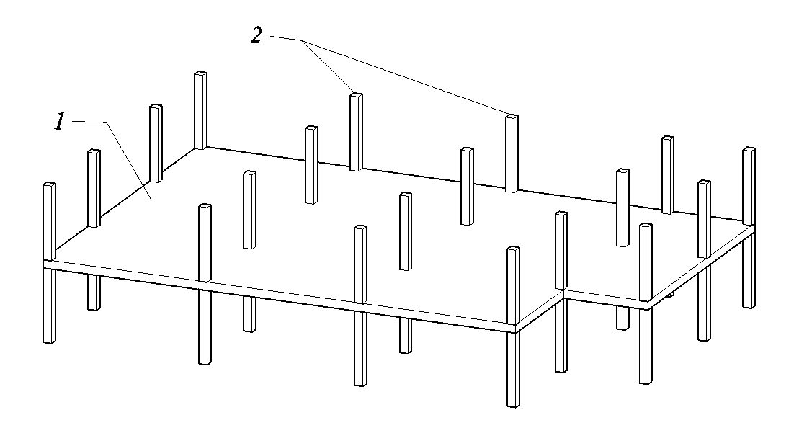
1 -плита перекрытия ; 2 -колонны
Рисунок 5.1 -Каркасная конструктивная система
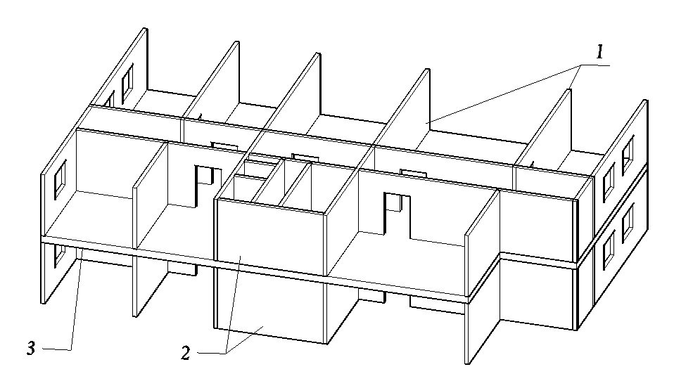
1 -стены ; 2 -ядро жесткости ; 3 -плита перекрытия
Рисунок 5.2 -Стеновая конструктивная система
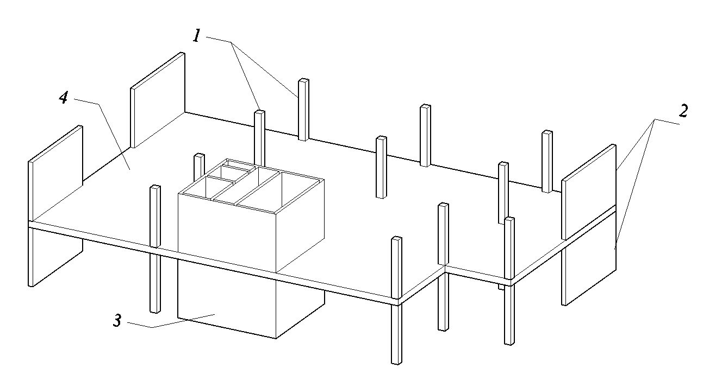
1 - колонны; 2 - стены ; 3 - ядро жесткости; 4 - плита перекрытия
Рисунок 5.3 -Смешанная конструктивная система
Допускается предусматривать в здании (сооружении) несколько конструктивных систем (в частности, для наземной и подземной частей). Конструктивная система таких зданий (сооружений) -комбинированная.
При связевой схеме сопротивление горизонтальным нагрузкам осуществляется за счет работы вертикальных несущих элементов (стен, ядер жесткости) как консолей, защемленных в фундаменте.
При рамной схеме сопротивление горизонтальным нагрузкам осуществляется за счет работы рам, образуемых колоннами, пилонами и ригелями (условными ригелями), с жесткими узлами сопряжения.
При рамно -связевой схеме сопротивление горизонтальным нагрузкам осуществляется за счет совместной работы связей (стен, ядер жесткости) и рам, образуемых колоннами и ригелями (условными ригелями), с жесткими узлами сопряжения.
Регулярная в плане конструктивная система предусматривает расположение вертикальных несущих элементов (колонн, пилонов, стен) по узлам сетки координационных осей здания (сооружения). При этом шаг вертикальных несущих элементов может отличаться друг от друга в том и другом направлении. Регулярная по высоте конструктивная система предусматривает одинаковую конструктивную систему на всех этажах здания (сооружения).
Нерегулярную несущую конструктивную систему рекомендуется проектировать таким образом, чтобы центр жесткости и центр масс конструктивной системы был как можно ближе к месту расположения равнодействующей вертикальной нагрузки.
Несущую конструктивную систему рекомендуется проектировать таким образом, чтобы вертикальные несущие элементы (колонны, пилоны, стены) были расположены от фундамента один над другим по высоте здания (сооружения), т.е. были соосными. В случае, когда вертикальные несущие элементы не выполнены по одной вертикальной оси, под «висячими» вертикальными несущими элементами устраивают распределительные (переходные) конструкции в виде толстых переходных плит, распределительных балок и балок -стенок. Для смешанных конструктивных систем в уровне переходных горизонтальных конструкций могут быть применены локальные увеличения толщины опорных сечений монолитных стен -вуты.
- температурно -усадочные -для уменьшения усилий в конструкциях и ограничения раскрытия в них трещин вследствие температурных и усадочных деформаций;
- осадочные -для предотвращения образования и раскрытия трещин в конструкциях вследствие неравномерных осадок фундаментов.
Допускается устройство временных деформационных швов на период строительства с их последующим замоноличиванием после замыкания теплового контура здания (сооружения).
Вертикальные деформационные швы выполняют посредством:
- спаренных вертикальных несущих элементов, располагаемых на границе планировочных секций ;
- опирания горизонтальных несущих элементов на консольные выступы вертикальных несущих элементов ;
- опирания горизонтальных несущих элементов друг на друга с устройством подрезок.
Ширину вертикальных швов следует определять по расчету, но принимать не менее 20 мм в свету.
Температурные швы могут быть доведены только до фундаментов. При этом при проектировании большеразмерных (один из размеров в плане превышает длину температурного отсека) фундаментных плит или ростверков следует учитывать возможные дополнительные напряжения в них и деформации в результате температурных воздействий, усадки и тепловыделения при гидратации бетона (6.2.16).
Расстояния между температурно -усадочными швами (длины температурных отсеков) монолитных конструктивных систем определяют расчетом согласно 6.2.16.
Осадочные швы должны разделять здание (сооружение), включая фундаменты, на изолированные отсеки.
Осадочные швы устраивают в случаях, когда неравномерные осадки основания (относительная разность осадок) в обычных грунтовых условиях превышают предельно допустимые значения, регламентируемые СП 22.13330.
Если по расчету обеспечена прочность основания и несущих элементов, и раскрытие трещин в несущих железобетонных элементах не превышает предельно допустимые значения, осадочный шов допускается не устраивать.
К зданиям небольшой этажности относят здания высотой не более 50 м, средней этажности -высотой не более 75 м, к высотным -высотой более 75 м.
Для зданий (сооружений) применяют различные типы фундаментов из монолитного железобетона (рисунок 5.4): отдельные (столбчатые), ленточные, плитные или свайные (в том числе комбинированные свайно -плитные). При соответствующем расчетном обосновании допускается применение других видов фундаментов (ребристых, коробчатых и пр.).
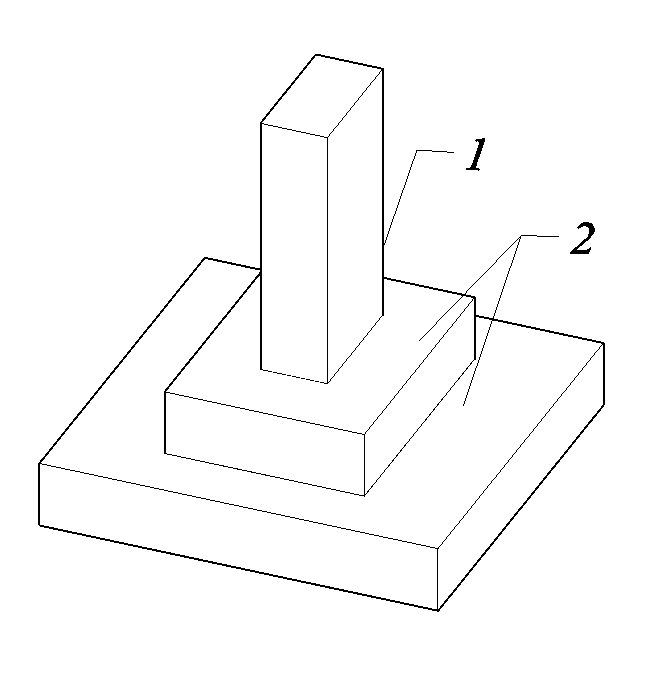
430.1325800.2018
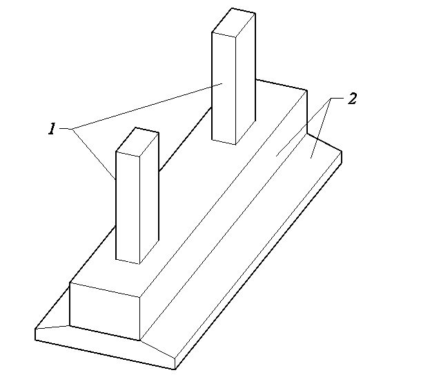
е
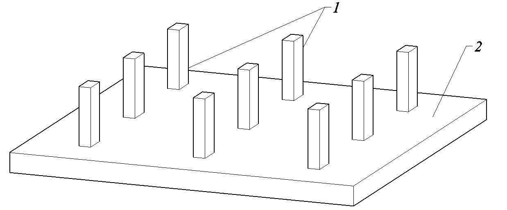
а -столбчатый; б -ленточный; в -плитный сплошной; г -плитный ребристый; д -плитный коробчатый; е -свайный; 1 -колонны; 2 -фундаментные плиты и ленты ; 3 -ребра фундаментных плит ; 4 -сваи
Рисунок 5.4 -Фундаменты для монолитных конструктивных систем
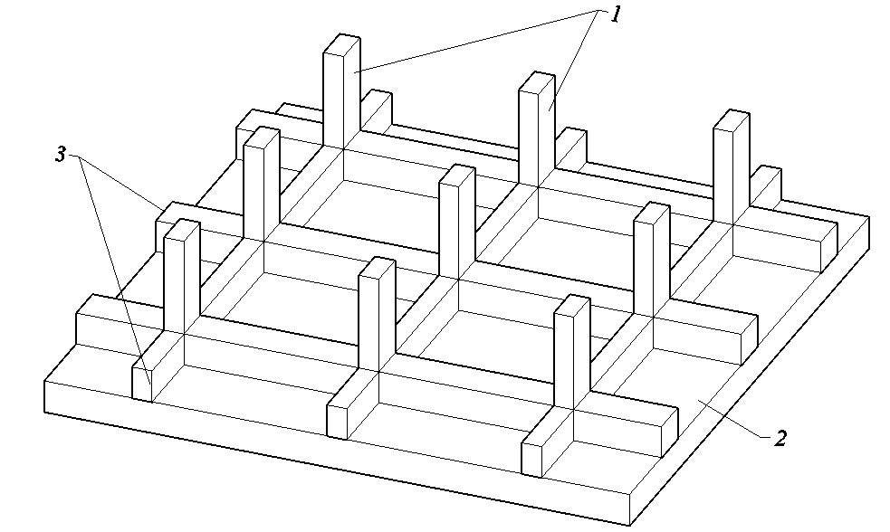
а -квадратное; б -круглое; в -прямоугольное; г -Г -образное (уголковое); д -Т -образное (тавровое); е -крестообразное
Рисунок 5.5 -Поперечные сечения колонн монолитных конструктивных систем
В высотных зданиях (5. 1 .6) для повышения общей пространственной жесткости конструктивных систем могут быть применены стены -аутригеры, связывающие внутренние монолитные ядра жесткости и наружный контур вертикальных несущих конструкций здания.
К плитам относят элементы, с соотношениями размеров 𝑎𝑎 > 5 𝑡𝑡 , ( а -наименьший размер рядовой ячейки плиты в плане, t -толщина плиты). К балкам относят элементы, с соотношением размеров 𝑙𝑙 > 3h ( l -размер пролета балки, h -высота элемента. В противном случае такие балки относят к балкам -стенкам (или к высоким балкам).
Конструкцию безбалочных перекрытий принимают в виде плоских плит (рисунок 5.6, а ), плит с капителями (рисунок 5.6, г ) или в комбинированном варианте. Кроме того, допускается устройство контурных балок по свободным краям перекрытия (рисунок 5.6, а ).
В конструкциях балочных перекрытий расположение и шаг балок принимают в одном или двух направлениях с учетом шага вертикальных несущих конструкций (рисунок 5.6, б , в , д , е ). Ширину балок принимают преимущественно не более габаритного размера колонны и пилона, высоту балок -не менее толщины плитной части перекрытий.
Допускается для размещения инженерных сетей и звукоизоляции, устройства гладких потолков и т. п. принимать размещение балок в перекрытиях ребрами вверх. Конструкции балочных перекрытий с частым шагом балок (кессонные) следует применять преимущественно в регулярных конструктивных системах. а
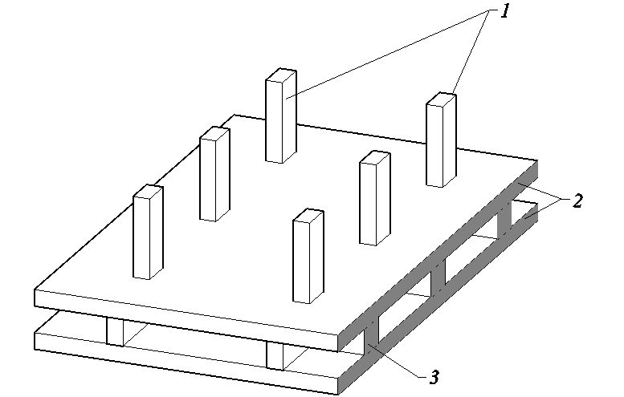
г
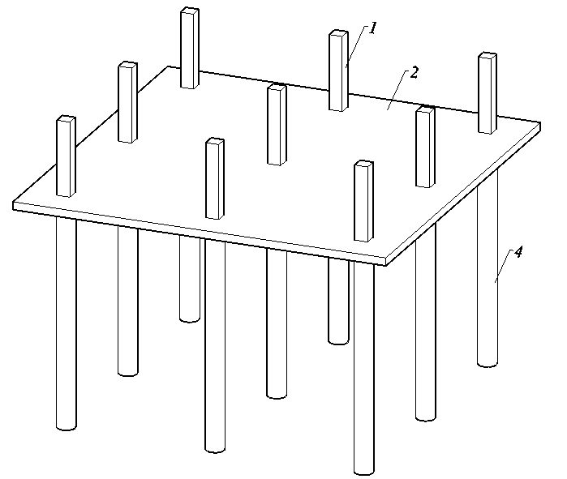
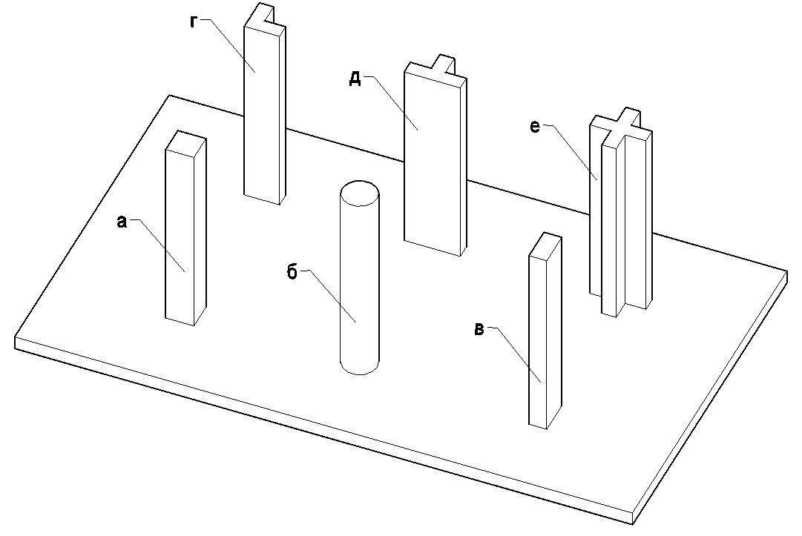
а -плоская плита; б -плита с балками в одном направлении; в -плита с балками в различных направлениях; г -плита с капителями; д -плита с главными и второстепенными балками; е -кессонная плита; 1 -колонны; 2 -плита сплошная ; 3 -контурная балка; 4 -главная балка (в створах колонн) ; 5 -капитель; 6 -второстепенная балка; 7 -ребра кессонного перекрытия
Рисунок 5.6 -Плиты безбалочных и балочных перекрытий в монолитных конструктивных системах
5.2Несущие железобетонные конструкции
Свайно -плитные фундаменты выполняют из монолитного железобетона под всей площадью здания (сооружения) в виде фундаментной плиты постоянной или переменной толщины и свай (забивных, буронабивных, буроинъекционных и пр.).
Тип и расположение свай по полю фундамента следует выбирать в зависимости от конструктивной системы здания (сооружения), нагрузок, приходящихся на сваи, и инженерно -геологических условий основания.
При проектировании рекомендуется принимать оптимальные конструктивные параметры фундаментных плит, устанавливаемые на основе технико -экономического анализа. Толщину сплошных монолитных фундаментных плит рекомендуется принимать не менее 0,5 м и не более 3 ,0 м. Класс бетона по прочности на сжатие принимают не менее В20, коэффициент продольного армирования не менее 0,3 % , а марку по водонепроницаемости -не менее W 6.
В первом приближении допускается толщину плоской фундаментной плиты на естественном основании назначать равной 1/65 ÷ 1/50 h зд, где h зд -строительная высота здания (сооружения), равная расстоянию от верха фундамента до срединной плоскости плиты покрытия. Толщину плоских фундаментных плит в общем случае назначают из условия обеспечения прочности, включая прочность на продавливание (колоннами, пилонами или сваями), жесткости и трещиностойкости.
В необходимых случаях в местах расположения вертикальных несущих элементов (колонн, пилонов и свай) предусматривают поперечное армирование, определяемое расчетом, также допускается местное увеличение толщины плиты.
При проектировании рекомендуется принимать оптимальные конструктивные параметры колонн, устанавливаемые на основе технико -экономического анализа. При этом минимальный размер квадратного и круглого поперечного сечения колонн следует принимать из условия обеспечения требований по гибкости по 10.2.2 СП 63.13330.2012, и не менее 300 мм, для колонн с вытянутым поперечным сечением и пилонов -не менее 2 00 мм. Класс бетона по прочности на сжатие принимают не менее В25, процент армирования в любом сечении (включая участки с нахлесточным соединением арматуры) -не более 10 %.
СП
430.1325800.2018
В нерегулярных конструктивных системах, а также с целью оптимизации решений при соответствующем расчетном обосновании допускается предусматривать различные конструктивные параметры колонн с учетом их расположения и восприятия нагрузок (средние, крайние, угловые).
Проектирование сталежелезобетонных конструкций, а также конструкций из высокопрочных бетонов выполняют по СП 266.1325800, СП 311.1325800.
При проектировании рекомендуется принимать оптимальные конструктивные параметры стен, устанавливаемые на основе технико -экономического анализа. Размеры поперечного сечения (толщину) стен рекомендуется принимать не менее 0, 1 6 м и назначают из условия обеспечения требований по гибкости по 10.2.2 СП 63.13330.2012. Класс бетона стен принимают не менее В20, процент армирования в любом сечении стены (включая участки с нахлесточным соединением арматуры) -не более 10 %.
При пролетах 1215 м применяют преимущественно кессонные или часторебристые перекрытия. При пролетах порядка 20 -30 м и более также применяют пространственные конструкции перекрытий и покрытий (складки, оболочки и т. п.) согласно СП 387.1325800.
При соответствующем технико -экономическом обосновании при пролетах более 7 м применяют высокопрочную напрягаемую арматуру со сцеплением или без сцепления с бетоном (5. 2 .13).
Для снижения массы перекрытий зданий (сооружений) нормального и пониженного уровней ответственности допускается применение в перекрытиях легких бетонов, пустотелых вкладышей или вкладышей в виде плит и блоков из легких бетонов согласно СП 351.1325800.
В системах со сцеплением напрягаемой арматуры с бетоном в одном каналообразователе укладывают несколько канатов. В таких системах сразу после натяжения арматурных канатов каналы инъецируют в построечных условиях специальными цементными растворами, которые после набора прочности обеспечивают сцепление арматуры с бетоном.
В системах без сцепления арматуры с бетоном инъецирование каналов цементными растворами не выполняют. В такой системе заполненное специальной защитной смазкой пространство между канатом и защитной оболочкой каналообразователя исключает возможность сцепления арматуры с бетоном при натяжении арматуры, а также при нагружении и дальнейшей эксплуатации конструкции.
Конструирование в монолитных перекрытиях напрягаемой арматуры без сцепления с бетоном в эксплуатационной стадии следует производить таким образом, чтобы обеспечить эффективное восприятие опорных и пролетных изгибающих моментов в плите перекрытия. Для этого напрягаемую арматуру раскладывают вдоль пролета плиты волнообразно по параболическим линиям на опоре и в пролете.
Рисунок 5.7 -Схема раскладки напрягаемой арматуры без сцепления с бетоном в эксплуатационной стадии по высоте сечения вдоль неразрезной конструкции перекрытия
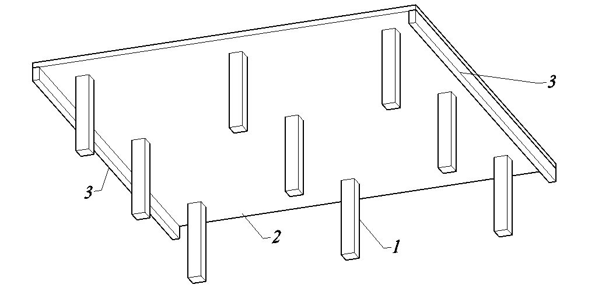
При проектировании рекомендуется принимать оптимальные конструктивные параметры перекрытий, устанавливаемые на основе технико -экономического анализа. При этом толщину плит плоских перекрытий рекомендуется принимать не менее 160 мм, класс бетона -не менее В20. Толщину ребристых и кессонных плит рекомендуется принимать не менее 250 мм и не более 500 мм, класс бетона -не менее В25.
В первом приближении толщину плоских плит перекрытия в каркасных и смешанных конструктивных системах рекомендуется назначать не менее l /30, в стеновых конструктивных системах -не менее l /35, где l -длина наибольшего пролета плиты.
В дальнейшем толщину плоских плит перекрытия при необходимости корректируют с учетом требований по ограничению деформаций (прогиба) плит и прочности на продавливание.
6Требования к расчету монолитных конструктивных систем
6.1Основные принципы расчета конструктивных систем и их элементов
Кроме того, по результатам расчета монолитных конструктивных систем оценивают эксплуатационную пригодность конструктивной системы на соответствие нормативным документам. Для этого определяют ряд основных параметров конструктивной системы (согласно 6.2.1 и 6.4), значения которых сравнивают с предельно допустимыми значениями, приведенными в СП 20.13330, СП 22.13330, СП 63.13330 и других нормативных документах.
По результатам указанных расчетов производят окончательное конструирование несущих элементов и узлов с учетом СП 63.13330 и настоящего свода правил.
При необходимости, предусмотренной нормативными документами, также следует выполнять расчеты монолитных конструктивных систем по особым предельным состояниям, возникающим при особых воздействиях и ситуациях, на устойчивость против прогрессирующего обрушения.
Расчет на прогрессирующее обрушение рекомендуется производить, принимая нелинейные жесткости элементов конструктивной системы. Допускается на начальных стадиях расчета принимать нелинейные жесткости элементов по 6.2.9.
6.2Требования к расчету конструктивных систем
- усилий, возникающих в несущих элементах и узлах, по результатам общего расчета конструктивной системы на всех стадиях (возведения и эксплуатации) ;
- горизонтальных перемещений верха;
- первых форм собственных колебаний;
- формы и устойчивости положения (опрокидывание);
- перекосов этажных ячеек (при расчетах конструкций фасадов) ;
- максимальной (средней) осадки, относительной разности осадок фундамента;
- прогибов плит перекрытий;
- ускорений колебаний перекрытий верхних этажей.
- порядок приложения и изменения вертикальной нагрузки и жесткостей в процессе возведения и эксплуатации;
- образование трещин от температурно -усадочных деформаций бетона в процессе твердения и наличие технологических швов при бетонировании захватками;
- прочность и деформационные характеристики бетона в момент освобождения конструкции от опалубки и передачи нагрузки от вышележащих этажей.
Линейные жесткости железобетонных элементов, осуществляющие связь усилий с упругими (линейными) деформациями, определяют как для сплошного упругого тела.
Нелинейные жесткости железобетонных элементов определяют по поперечному сечению элементов с учетом возможного образования трещин и развития неупругих (нелинейных) деформаций в бетоне и арматуре, соответствующих кратковременному и длительному действиям нагрузки.
На первой стадии расчета конструктивной системы, характеризуемой тем, что армирование железобетонных элементов неизвестно, нелинейную работу элементов допускается учитывать, применяя нелинейную жесткость, определяемую понижением их линейных жесткостей (или модуля упругости бетона) с помощью условных понижающих коэффициентов.
На последующих стадиях расчета конструктивной системы, когда известно армирование железобетонных элементов, в расчет следует вводить в зависимости от вида определяемого параметра конструктивной системы (6.2.1) уточненные значения нелинейных жесткостей элементов, учитывающие армирование, образование трещин и развитие неупругих деформаций в бетоне и арматуре согласно СП 63.13330.
- значения продольных и поперечных сил, изгибающих моментов и крутящих
СП
430.1325800.2018 моментов (в необходимых случаях) -в колоннах ;
- значения изгибающих моментов, крутящих моментов, поперечных и продольных сил -в плоских плитах перекрытий, покрытия и фундаментов ;
- значения продольных и сдвигающих сил, изгибающих моментов, крутящих моментов и поперечных сил -в пилонах и стенах.
В первом приближении рекомендуется принимать значения понижающих коэффициентов равными:
0,6 -для вертикальных сжатых несущих элементов;
0,3 -для несущих горизонтальных элементов.
По найденным усилиям определяют армирование элементов конструктивной системы, которое учитывают при определении жесткостей элементов согласно СП 63.13330, применяемых для уточнения усилий на последующих стадиях расчета.
В первом приближении значения условных понижающих коэффициентов допускается принимать равными:
0,6 -для вертикальных несущих элементов ;
0,2 -для горизонтальных несущих элементов при наличии трещин;
0,3 -для горизонтальных несущих элементов при отсутствии трещин.
При определении горизонтальных перемещений верха конструктивной системы необходимо учитывать работу основания.
Горизонтальные перемещения верха здания (сооружения) не должны превышать предельно допустимых значений, установленных СП 20.13330.
Допускается определять горизонтальные перемещения верха по недеформированной схеме, принимая линейные жесткости элементов. При этом значение горизонтальных перемещений верха здания (сооружения) не должно превышать h /1000 , где h -высота здания (сооружения) согласно таблице Д.4 СП 20.13330.2016.
На последующих стадиях расчета при известном армировании следует принимать уточненные жесткости плит с учетом армирования, наличия трещин и неупругих деформаций в бетоне и арматуре, определяемые согласно СП 63.13330 и др.
Предельно допустимое значение прогибов устанавливают в соответствии с СП 20.13330.
СП
430.1325800.2018
Расчет на устойчивость конструктивной системы выполняют на действие расчетных значений постоянных, длительных и кратковременных вертикальных и горизонтальных нагрузок, соответствующих предельным состояниям первой группы, с учетом работы основания.
При расчете устойчивости формы конструктивной системы принимают нелинейные пониженные жесткости ее элементов, поскольку устойчивость конструктивной системы связана с деформативностью системы и отдельных элементов. Допускается принимать нелинейные жесткости элементов конструктивной системы с применением условных понижающих коэффициентов. При этом значения условных понижающих коэффициентов в первом приближении принимают с учетом 6.2.9, исходя из работы горизонтальных несущих конструкций при наличии трещин.
Запас по устойчивости формы конструктивной системы должен быть не менее чем двукратным. Запас по устойчивости формы характеризует превышение нагрузки на конструктивную систему, при которой возникает возможность потери общей устойчивости здания (сооружения), над расчетной, соответствующей предельным состояниям первой группы.
При расчете устойчивости положения (опрокидывание и сдвиг) конструктивные системы следует рассматривать как жесткое недеформированное тело. Расчет конструктивной системы на опрокидывание выполняют на действие опрокидывающего (от горизонтальной нагрузки) и удерживающего (от вертикальной нагрузки) моментов. Значения моментов определяют относительно крайней точки фундамента. При расчете на опрокидывание удерживающий момент должен превышать опрокидывающий момент с коэффициентом 1,5. При расчете на сдвиг удерживающая горизонтальная сила должна превышать действующую сдвигающую силу с коэффициентом 1,2. При этом следует учитывать наиболее неблагоприятные значения коэффициентов надежности по нагрузке.
Нелинейные жесткости вертикальных и горизонтальных элементов допускается принимать согласно 6.2.9 с учетом работы горизонтальных несущих конструкций при наличии трещин.
Перекосы вертикальных ячеек не должны превышать предельно допустимого значения, приведенного в таблице Д.4 СП 20.13330.2016.
Возникающие вследствие деформаций основания крены здания (сооружения) должны быть ограничены, исходя из условий эксплуатации технологического оборудования, указанных в задании на проектирование.
Расчет выполняют в пространственной постановке. Жесткостные характеристики элементов принимают как для сплошного упругого тела. Принимают пониженную прочность бетона и соответствующий ей модуль упругости на ранней стадии твердения бетона, принимая во внимание, что возраст бетона к моменту распалубливания меньше требуемого для достижения бетоном
СП
430.1325800.2018 прочности, соответствующей принятому классу бетона.
По результатам расчета определяют действующие усилия в железобетонных конструкциях и оценивают их несущую способность, жесткость и трещиностойкость согласно СП 63.13330. Если прочность и трещиностойкость конструкций недостаточны, а для перекрытий прогибы завышены, увеличивают прочность бетона и расчет выполняют вновь вплоть до выполнения требований по прочности, трещиностойкости и деформациям.
Снятие -перестановка опалубки с ненагруженных железобетонных элементов возможно только по достижении требуемой прочности бетона в них, определяемой из расчета на монтажные нагрузки и нагрузку от собственного веса. При этом необходимое условие для горизонтальных элементов -достижение требуемой прочности нижележащих вертикальных элементов.
Снятие -перестановка опалубки с нагруженных элементов возможно только по достижении требуемой прочности бетона в них, определяемой из расчета на монтажные нагрузки, нагрузку от собственного веса и других вышерасположенных конструкций.
При необходимости могут быть рассмотрены промежуточные стадии распалубливания (опалубочные щиты сняты, стойки остаются или частично убираются), при этом в расчетах учитывают работу оставшихся стоек опалубки.
К температурным воздействиям эксплуатационного периода относят климатические колебания температуры наружного воздуха и эксплуатационный подогрев (или охлаждение) конструктивной системы.
Температурные воздействия строительного периода определяют с учетом экзотермии и других условий твердения бетона, включая конструктивные и технологические мероприятия по регулированию температурного режима конструкции, температуры замыкания и т. п.
Расчет выполняют из условия проверки образования температурно -усадочных трещин, при котором сравнивают значение растягивающих напряжений в железобетонном элементе, действующих в результате температурно -усадочных воздействий и сопротивление бетона на растяжение в возрасте, соответствующем рассматриваемой расчетной ситуации.
Температурные воздействия принимают в виде максимальной температуры установленного для конструкции температурного поля с учетом температуры окружающей среды. Усадочные воздействия учитывают путем введения предельного значения усадочных деформаций [ 2 ]. Температурные поля железобетонных элементов определяют методами строительной физики.
6.3Требования к расчету железобетонных конструкций
Расчет по прочности колонн по нормальным сечениям выполняют по предельным усилиям или с применением деформационной модели согласно СП 63.13330.2012 (8.1.14 -8.1.17, 8.1.20 -8.1.30).
В общем случае влияние продольного изгиба учитывают расчетом конструктивной системы по деформированной схеме, определяя деформации
СП
430.1325800.2018 железобетонных элементов с учетом их неупругой работы и наличия трещин. При расчете конструктивной системы по недеформированной схеме влияние продольного изгиба следует учитывать умножением изгибающих моментов или эксцентриситета продольной силы на коэффициент, определяемый в зависимости от условной критической силы согласно 8.1.15 СП 63.13330.2012.
Допускается выполнять расчеты по прочности элементов плит по предельным усилиям согласно 8.1 СП 63.13330.2012 как линейных выделенных изгибаемых элементов единичной ширины с учетом соответствующих граничных условий и нагрузок.
Расчет по прочности нормальных сечений предварительно напряженных плит перекрытий с натяжением арматуры на бетон и с напрягаемой арматурой без сцепления с бетоном выполняют согласно приложению А.
Допускается выполнять расчеты по прочности элементов стен по предельным усилиям согласно 8.1 СП 63.13330.2012 как линейных выделенных внецентренно сжатых элементов единичной ширины с учетом соответствующих граничных условий и нагрузок.
Расчет несущих горизонтальных конструкций на продавливание выполняют при действии сосредоточенной силы и изгибающих моментов, определенных из общего статического расчета.
Расчет плит на продавливание около торцов стен производят для расчетного контура поперечного сечения плиты, расположенного у торца стены, на расстоянии h0 2 / от контура поперечного сечения стены и состоящего из трех участков: первого участка, расположенного параллельно торцу стены, и двух участков, расположенных параллельно длине стены и равных длине участка, параллельного торцу стены (рисунок 6.1).
При расположении торцов стен у края плиты помимо указанного выше расчетного контура плиты рассматривают также расчетный контур, состоящий из двух прямолинейных участков, следующих от края плиты на расстоянии h0 2 / от граней стены вдоль длины стены на расстояние от торца стены, равное толщине стены (рисунок 6.1, б).
Расчет производят по правилам, приведенным в 8.1.46 СП 63.13330.2012. При этом сосредоточенную нормальную силу 𝐹𝐹 от внешней нагрузки, действующую на рассматриваемое расчетное поперечное сечение плиты, принимают равной равнодействующей всех поперечных сил, действующих по длине рассматриваемого контура поперечного сечения плиты, а сосредоточенный момент 𝑀𝑀 учитывают только в направлении 𝑌𝑌 (из плоскости стены) и принимают при расчете плиты на продавливание равным половине разности изгибающих моментов в плите, действующих по обе стороны стены на участках контура расчетного поперечного сечения плиты, параллельных длине стены (рисунок 6.1, а ).
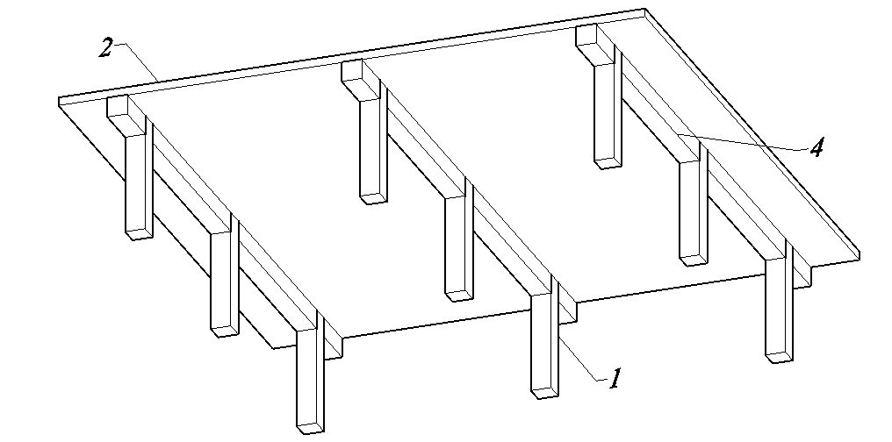
а -около стен, расположенных внутри площади плит; б -около стен, расположенных у края плит ; 1 -контур расчетного поперечного сечения; 1' -второй вариант расположения контура расчетного поперечного сечения; 2 -край плиты; 3 -площадь приложения нагрузки
Рисунок 6.1 -Схемы расчетных контуров поперечного сечения при продавливании плоских плит
Расчет плиты на продавливание около угла стены производят только на действие продольной силы 𝐹𝐹 (без учета момента), принимаемой равной равнодействующей поперечных сил, действующих на длине всех участков контура расчетного поперечного сечения плиты согласно рисунку 6.2.
Расчет подвешенной к вышележащей стене плиты на продавливание (отрыв) производят аналогично вышеуказанным случаям, но по контуру расчетного поперечного сечения плиты, отстоящего от крайних стержней подвешивающей плиту арматуры, определяемой из расчета на отрыв, на расстоянии h0 2 / (рисунок 6.3). При необходимости постановки поперечной арматуры на продавливание подвешивающие стержни в расчете не учитывают.
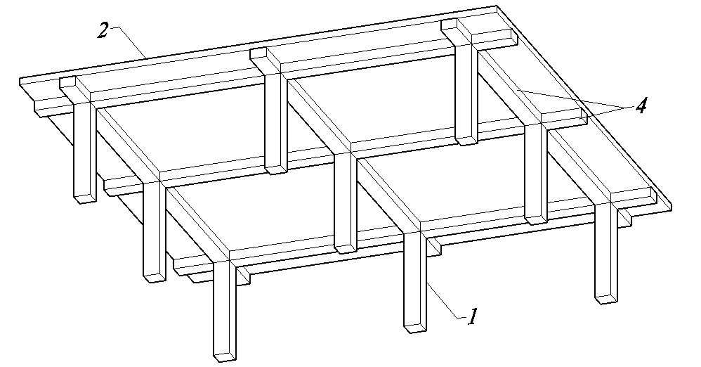
1 -контур расчетного поперечного сечения; 2 -площадь приложения нагрузки
Рисунок 6.2 -Схема расчетных контуров поперечного сечения при продавливании плоских плит около углов стен
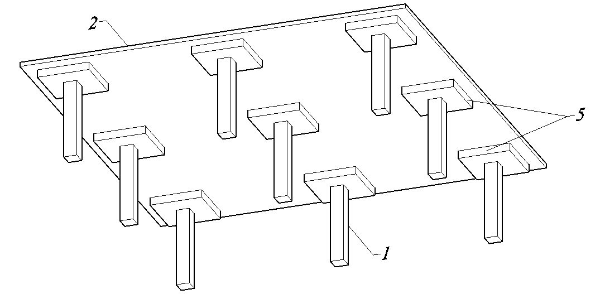
1 -расчетное поперечное сечение; 2 -подвешивающие арматурные стержни; 3 -контур расчетного поперечного сечения
Рисунок 6.3 -Схема для расчета на продавливание плоской плиты при подвеске перекрытия к вышележащей стене
При определении расчетного контура поперечного сечения на продавливание необходимо учитывать фактическое положение отверстий в опорных зонах несущих горизонтальных конструкций.
В общем случае расчеты по наклонным сечениям выполняют согласно 8.1.31 -8.1.35 СП 63.13330.2012. При этом в качестве рабочей высоты сечения принимают рабочую высоту короткой консоли h01 , образованной подрезкой, а в случае отсутствия анкеровки продольной арматуры в зоне подрезки расчет по наклонным сечениям следует выполнять на действие поперечных сил и изгибающих моментов, увеличенных на 20 %.
Расчет короткой консоли подрезки производят согласно приложению Ж СП 63.13330.2012, принимая направление наклонной сжатой полосы от наружного края площадки опирания до равнодействующей усилий в поперечной подвешивающей арматуре на уровне сжатой арматуры конструкции.
При отсутствии анкеровки нижней арматуры в зоне подрезки конструкции следует выполнять проверку прочности наклонного сечения, расположенного вне подрезки и начинающегося на расстоянии не менее h0 -h01 от торца. При этом в расчете не учитывают продольную арматуру короткой консоли, а длину проекции 𝐶𝐶 принимают не менее расстояния от начала наклонного сечения до конца указанной арматуры.
Для смежной конструкции с подрезкой выполняют аналогичные проверки.
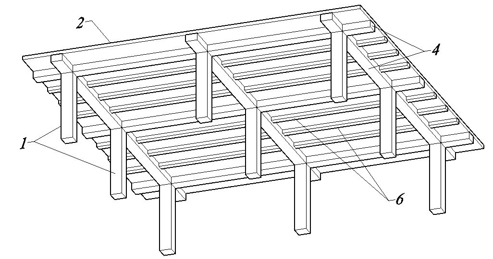
Рисунок 6.4 -Расположение расчетных наклонных сечений для расчета конструкций с подрезками
где 𝐹𝐹 -опорная реакция примыкающего элемента (балки, консоли); h𝑠𝑠 -расстояние от центра тяжести сжатой зоны примыкающего элемента до центра тяжести продольной арматуры;
∑𝑅𝑅𝑠𝑠𝑠𝑠 𝐴𝐴 𝑠𝑠𝑠𝑠 -сумма поперечных усилий, воспринимаемых хомутами, установленными дополнительно сверх требуемых по расчету наклонного или пространственного сечения согласно 8.1.32 -8.1.42 СП 63.13330.2012. Хомуты располагают на длине зоны отрыва, равной
где 𝑏𝑏 -ширина примыкающего элемента, h𝑠𝑠 -расстояние от центра тяжести сжатой зоны примыкающего элемента до центра тяжести продольной арматуры 𝐴𝐴 𝑠𝑠 .
При этом высоту сжатой зоны опорного сечения примыкающего элемента допускается принимать равной х/ 0,8, где х -высота сжатой зоны, определенная из расчета по прочности и принимаемая не менее 2 a' . а -при примыкании балок; б -при примыкании консолей ; I -центр тяжести сжатой зоны примыкающего элемента
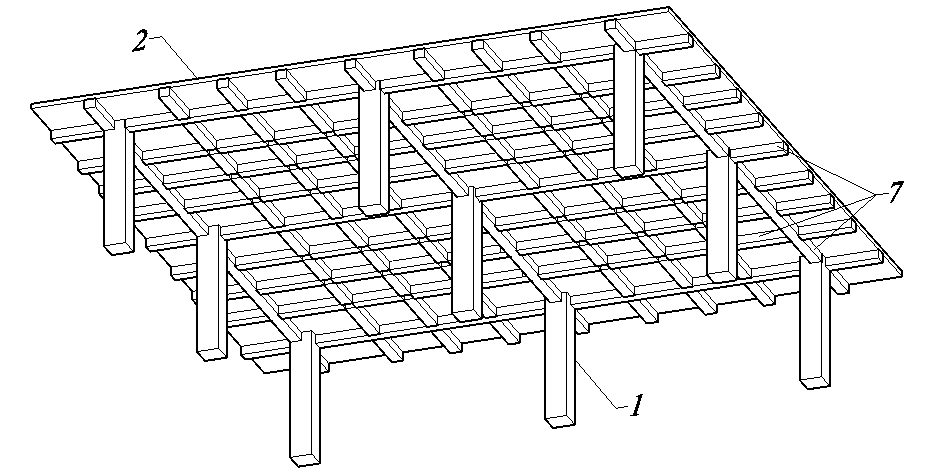
Рисунок 6.5 -Схема для определения длины зоны отрыва
6.4Методы расчета и расчетные модели монолитных конструктивных систем
Разработку расчетных моделей конструктивных систем следует выполнять преимущественно в пространственной постановке с учетом работы основания.
Расчетная модель представляет собой трехмерную систему из монолитных колонн, стен, пилонов, плит, балок, фундаментов, узлов их сопряжений и основания.
Расчетная модель должна соответствовать принятым проектным решениям в части геометрических параметров и физико -механических свойств материалов, включать в себя данные о нагрузках и воздействиях на здание (сооружение) и его элементы.
Методики расчетов по наклонным и пространственным сечениям с трещинами разработаны для частных случаев, а для сложных воздействий и учета многих факторов применяют различные упрощения.
СП
430.1325800.2018 упрощенные расчетные модели (одно -и двухмерные) на предварительных этапах проектирования.
Расчет регулярных (или близких к ним) каркасных и стеновых конструктивных систем также может быть выполнен методом заменяющих (эквивалентных) рам (6.4.1 2 ).
Для оценки несущей способности перекрытий может быть применен расчет методом предельного равновесия.
6.4. 7 При выполнении расчетов конструктивной системы численными методами следует применять специальные верифицированные и сертифицированные в Российской Федерации программные комплексы, учитывающие требования СП 14.13330, СП 16.13330, СП 20.13330, СП 22.13330, СП 24.13330, СП 63.13330.
При создании пространственной модели конструктивной системы необходимо учитывать характер совместной работы стержневых, оболочечных и объемных конечных элементов, связанных с различным числом степеней свободы для каждого из указанных элементов.
На первой стадии расчета конструктивной системы допускается учитывать деформативность основания с помощью единого коэффициента постели по всей площади основания, принимаемого по усредненным характеристикам грунтов.
При использовании свайных или свайно -плитных фундаментов сваи следует моделировать как железобетонные конструкции или учитывать их совместную работу с грунтом обобщенно, как единое основание с использованием приведенного коэффициента постели основания.
6.4. 11 Жесткости конечных элементов на первой стадии расчета конструктивной системы, когда армирование конструкций еще неизвестно, следует определять по подразделу 6.2.
После определения на этой стадии расчета усилий в элементах конструктивной системы и соответствующего армирования плит перекрытий и покрытий производят дополнительный расчет конструктивной системы для уточнения прогибов этих конструкций, принимая уточненные значения изгибных деформационных характеристик конечных элементов плит с учетом армирования в двух направлениях согласно СП 63.13330.
Аналогичный дополнительный расчет производят для более точной оценки изгибающих моментов в элементах перекрытий, покрытий и фундаментных плитах, а также продольных сил в стенах, колоннах и пилонах с учетом в изгибных и осевых нелинейных деформационных характеристиках элементов деформаций арматуры и бетона вплоть до их предельных значений.
Расчет выделенных в каждом направлении рам, состоящих из колонн и полос плоской плиты (условного ригеля) следует производить независимо друг от друга по общим правилам строительной механики на действие вертикальных и горизонтальных нагрузок, принимая при определении усилий линейные жесткости элементов рам.
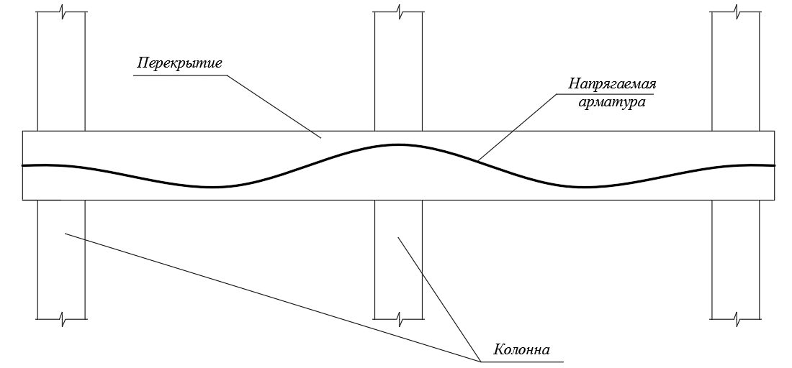
1 -заменяющие рамы; 2 , 3 -оси заменяющих рам соответственно в продольном и поперечном направлениях
Рисунок 6.6 -Разделение конструктивной системы на заменяющие рамы
Изгибающие моменты и поперечные силы в опорных и пролетных сечениях условного ригеля распределяют между его надколонными и межколонными полосами в зависимости от расположения колонн в раме (крайняя или промежуточная колонна) и соотношения между поперечными и продольными (вдоль оси рамы) пролетами.
Горизонтальные нагрузки принимают действующими в обоих направлениях. При допущении абсолютной жесткости плит перекрытий в своей плоскости горизонтальные перемещения и углы наклона всех несущих стен будут одинаковыми при симметричных в плане схемах и нагрузках. С учетом этого допускается принимать все стены одного направления, расположенные в одной плоскости, соединенными последовательно друг с другом в уровне перекрытий шарнирными связями, абсолютно жесткими вдоль своей оси. При несущих монолитных наружных стенах следует учитывать участки примыкающих стен перпендикулярного направления.
7Конструирование несущих железобетонных конструкций
Обеспечение укладки и уплотнения бетона зависит от состава бетонной смеси (подвижности бетонной смеси, размеров крупного заполнителя) и расположения арматуры по отношению к направлению укладки бетона.
Минимальное расстояние между стержнями арматуры для обеспечения совместной работы арматуры и бетона устанавливают в зависимости от диаметра арматурных стержней согласно 10.3.5 СП 63.13330.2012.
Максимальное расстояние между стержнями арматуры для различного типа железобетонных элементов устанавливают согласно подразделу 10.3 СП 63.13330.2012.
В качестве базовой длины прямой анкеровки принимают ее значение, требуемое для восприятия предельного усилия в арматурном стержне, соответствующего расчетному сопротивлению арматурной стали согласно 10.3.26 СП 63.13330.2012.
Анкеровку растянутой арматуры допускается выполнять путем загиба арматурных стержней, устройства крюков на концах арматурных стержней, приварки поперечных стержней (рисунок 7.1, б -д ). Кроме этого, анкеровку выполняют с помощью стальных элементов (пластин, уголков и шайб), привариваемых на концах арматурных стержней, а также с помощью специальных анкерных устройств (высаженных головок и т. п.). При таких способах анкеровки должна быть обеспечена прочность бетона на смятие под этими анкерами и прочность бетона на выкалывание, когда арматуру анкеруют за пределами рассматриваемого элемента. Расчет производят согласно 8.1.43 -8.1.45 СП 63.13330.2012.
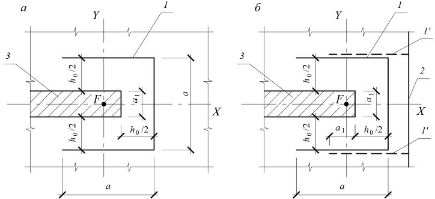
а -сцеплением прямых стержней с бетоном; б -крюками; в -лапками; г -петлями; д -приваркой поперечных стержней; 1 -бетон; 2 -анкеруемый стержень
Рисунок 7.1 -Анкеровка рабочей арматуры в бетоне элемента
При высоте этажа менее 3,6 м или при продольной арматуре диаметром более 28 мм стыки рекомендуется устраивать через этаж.
Выпуски стержней из колонны с большим поперечным сечением нижнего этажа в колонну с меньшим поперечным сечением верхнего этажа, а также колонн одинакового поперечного сечения рекомендуется выполнять согласно рисунку 7.2. При этом перевод стержней из одного этажа колонны в другой осуществляется путем их отгиба с уклоном не более 1:6 (рисунок 7.2, а, б ). Часть стержней колонны нижнего этажа может быть доведена до верха перекрытия (рисунок 7.2, б ) и не заводится в колонну верхнего этажа, если она не требуется там по расчету. В случае значительной разницы в сечениях колонн верхнего и нижнего этажей выпуски следует устраивать установкой специальных стержней в количестве, необходимом для колонны верхнего этажа (рисунок 7.2, в ).
Анкеровка и стыки арматуры внахлестку во всех случаях должны сооответствовать СП 63.13330.
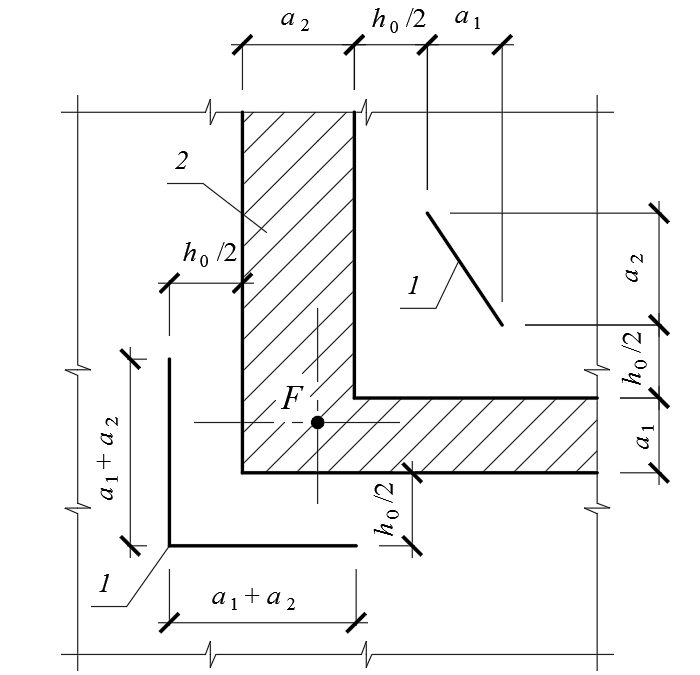
а -при одинаковом поперечном сечении колонн верхнего и нижнего этажей; б -при незначительном различии в сечениях колонн верхнего и нижнего этажей; в -при значительном различии в сечениях колонн верхнего и нижнего этажей
Рисунок 7.2 -Схема устройства стыков продольной рабочей арматуры монолитных колонн многоэтажных зданий
Рисунок 7.3 -Примеры охвата поперечной вязаной арматурой нескольких продольных стержней в различных формах поперечных сечений монолитных колонн
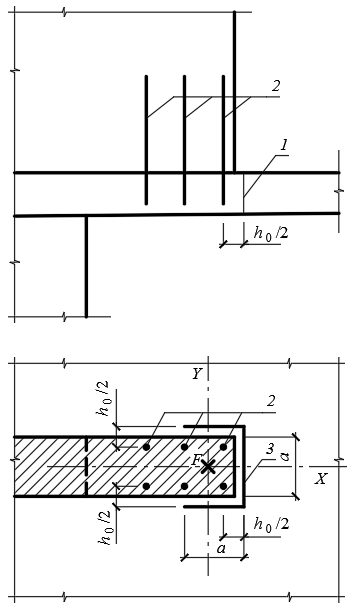
Продольную рабочую арматуру балок рекомендуется назначать из стержней одинакового диаметра. В случае применения стержней разных диаметров, стержни большего диаметра размещают в первом ряду, в углах сечения и в местах перегиба хомутов. Расположение вязаной арматуры в сечении монолитных балок приведено на рисунке 7.4. Схемы армирования поперечных сечений монолитных балок вязаными каркасами приведены на рисунке 7.5, при этом закрытые хомуты перевязывают вразбежку.
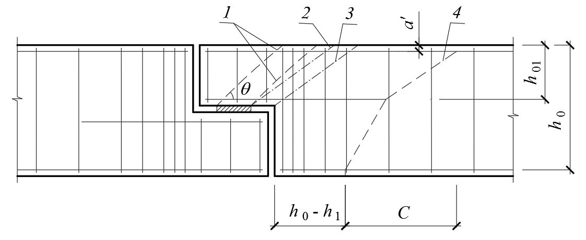
Рисунок 7.4 -Расположение вязаной арматуры в поперечном сечении монолитных балок
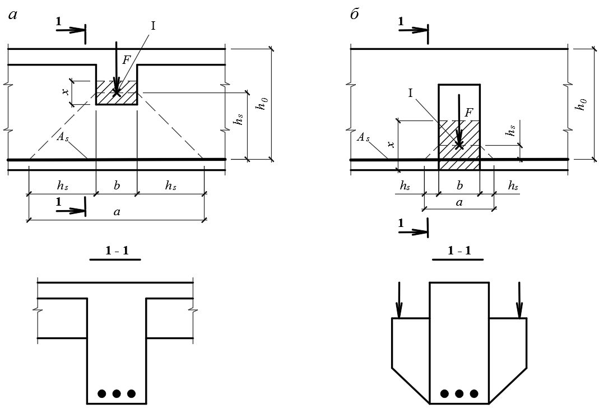
а -двухсрезными хомутами; б -четырехсрезными хомутами
Рисунок 7.5 -Схемы армирования сечений монолитных балок вязаной арматурой
Хомуты открытой конструкции допускается применять в вязаных каркасах средних балок, в том числе многопролетных неразрезных, монолитно связанных по верху плитой по всей длине при полной расчетной нагрузке на перекрытие не более 15 кН/м² .
Рекомендуется, чтобы каждый хомут охватывал в одном ряду не более пяти растянутых стержней и не более трех сжатых. При большем числе стержней в одном ряду, а также при ширине монолитной балки 350 мм и более рекомендуется переходить на четырехсрезные или многосрезные хомуты.
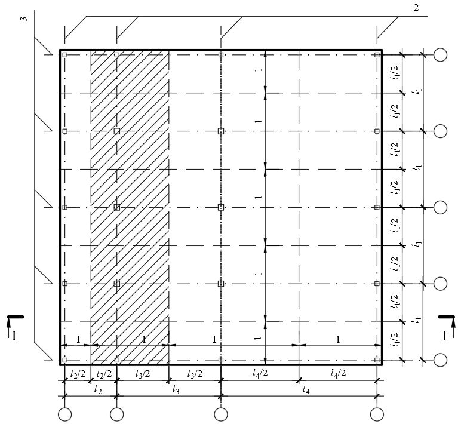
Рисунок 7.6 -Дополнительное армирование балок в местах сосредоточенных нагрузок
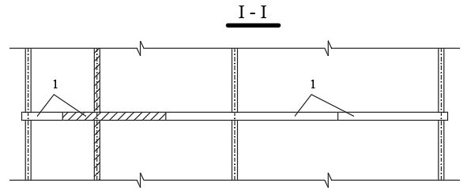
Отверстия размером до 300 мм специальными стержнями не обрамляют. Вязаную рабочую и распределительную арматуру элементов вокруг таких отверстий сгущают путем установки двух стержней с шагом 50 мм (рисунок 7.7, б ). При армировании сварными сетками такое отверстие рекомендуется вырезать в арматуре по месту.
Отверстия (проемы) в плитах, если необходимо по расчету, обрамляют армированными ребрами. Размеры и армирование ребер принимают в зависимости от их размеров, формы, расположения в плане относительно балок перекрытия, назначения проема.
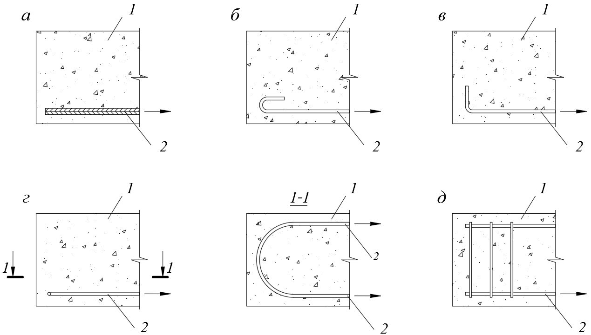
а -отверстие размером более 300 мм; б -отверстие размером 300 мм и менее ; 1 -стержни арматуры плиты; 2 -окаймляющие стержни, образованные сгущением арматуры плиты; 3 -стержни специальной окаймляющей отверстие арматуры
Рисунок 7.7 -Армирование плит в местах отверстий
АПриложение А. Общие положения по проектированию монолитных конструктивных систем с плитами перекрытий и покрытий с напрягаемой арматурой
А.1 При выборе конструктивных систем зданий, содержащих предварительно напряженные конструкции с натяжением на бетон, следует стремиться к соответствующей компоновке конструктивной системы.
Компоновку конструктивной системы производят для наиболее эффективного использования усилий предварительного напряжения и максимального ограничения дополнительных усилий (эффекты второго порядка), которые возникают в несущих конструкциях от усилий предварительного напряжения и должны быть учтены в расчете конструктивной системы.
Дополнительные усилия могут приводить к образованию технологических доэксплуатационных трещин в конструкциях перекрытий (рисунок А.1). Кроме того, нерациональная компоновка конструктивной системы может привести к потерям значительной части предварительного напряжения и образованию чрезмерных дополнительных усилий от обжатия в вертикальных конструкциях. Дополнительные усилия могут потребовать увеличения армирования.
Рисунок А. 1 -Образование доэксплуатационных трещин при обжатии перекрытий, связанных с наружными несущими стенами
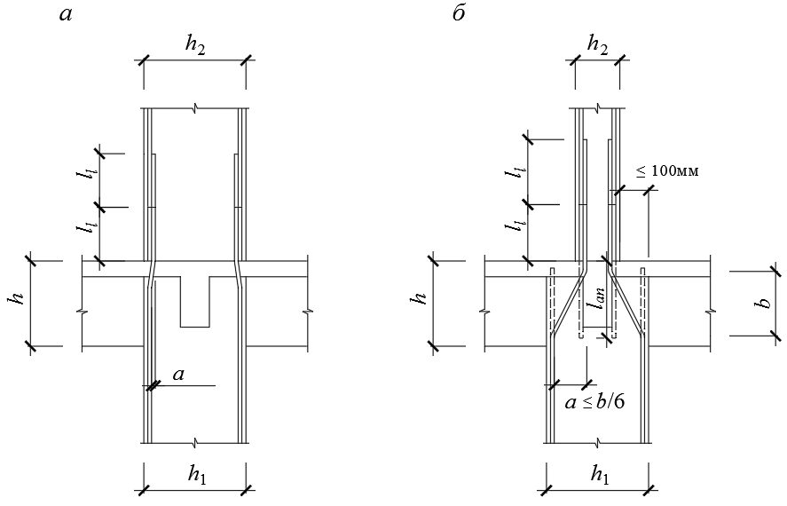
Для ограничения указанных негативных явлений предусматривают следующие конструктивные мероприятия:
- у крайних и угловых колонн и стен предусматривают консольные участки перекрытий;
- уменьшают крайние пролеты для снижения опорных моментов у крайних колонн и рационального размещения напрягаемых элементов;
- расположение диафрагм и ядер жесткости проектируют с их максимально близким размещением к геометрическому центру плана плит перекрытий (рисунок А. 2 );
- по возможности максимально снижают жесткость крайних и угловых колонн, а также пилонов и стен в направлении действия усилий обжатия;
- применяют по возможности равнопролетные перекрытия.
Примеры нерекомендуемых компоновок конструктивных систем представлены на рисунке А.3.
1 -колонны; 2 -стены; 3 -ядра жесткости
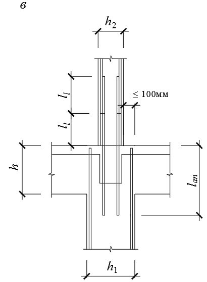
Рисунок А. 2 -Примеры рекомендуемых компоновок конструктивных систем
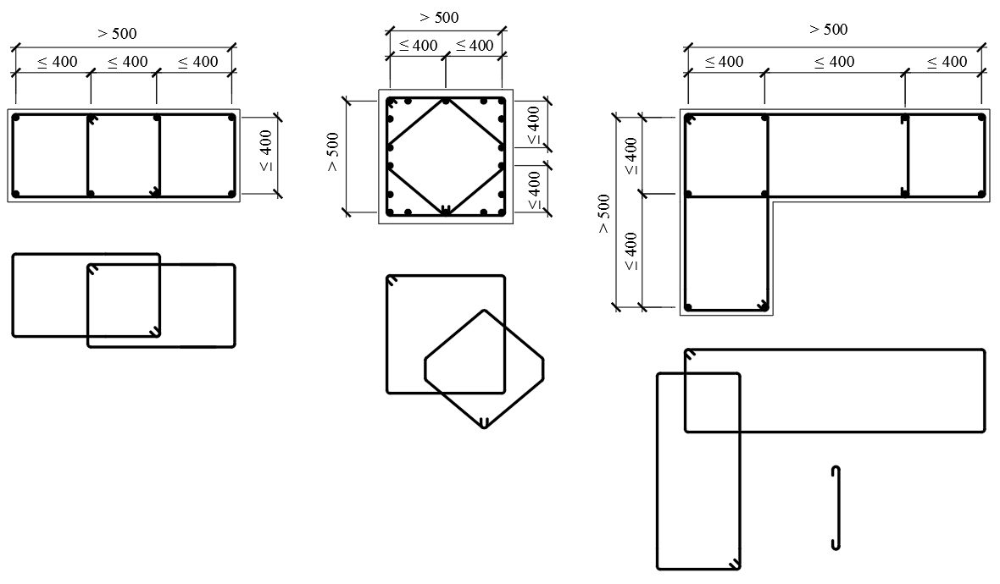
1 - колонны; 2 - ядра жесткости ; 3 - стены
Рисунок А. 3 -Примеры нерекомендуемых компоновок конструктивных систем
А.2 При расчетах предварительно напряженных конструкций перекрытий следует учитывать усилия предварительного напряжения и дополнительные поперечные силы, возникающие от усилий обжатия.
А.3 При расчетах предварительно напряженных конструкций с применением метода конечных элементов усилия предварительного напряжения для систем без сцепления арматуры с бетоном можно задавать как непосредственно для отдельных конечных элементов модели с учетом траектории усилий, так и в виде равномерно распределенных нагрузок. Отдельные программные комплексы позволяют задавать непосредственно усилия предварительного напряжения для отдельных конечных элементов модели.
А.4 На первой стадии расчета для оценки усилий в элементах конструктивной системы с предварительно напряженными перекрытиями жесткости элементов в первом приближении принимают с учетом начального модуля упругости бетона принятого класса с понижающими коэффициентами:
- 0,6 -для вертикальных сжатых элементов ;
- 0,7 -для плит перекрытий (покрытий) с учетом длительности действия нагрузки.
На последующих стадиях расчета жесткости следует определять согласно СП 63.13330.
А.5 При определении прогибов из плоскости плит перекрытий и покрытий в конструктивных системах с предварительно напряженными перекрытиями в первом приближении значения понижающих коэффициентов относительно начального модуля упругости бетона с учетом длительности действия нагрузки допускается принимать: для вертикальных несущих элементов -0,6, а для плит перекрытий (покрытий) -0,7 при наличии трещин или 0,9 -при отсутствии трещин.
А.6 Расчет предварительно напряженных плит перекрытий со сцеплением арматуры с бетоном производят в соответствии с СП 63.13330.
Расчет по прочности нормальных сечений предварительно напряженных плит без сцепления арматуры с бетоном следует производить с учетом практически свободного (без сцепления) равномерного деформирования арматуры по длине конструкции, не подобного распределению действующих изгибающих моментов от нагрузки, согласно А. 7А.10.
А.7 Расчет по прочности нормальных сечений железобетонных конструкций без сцепления арматуры с бетоном (рисунок 5.7) допускается производить на основе предельных усилий по двум вариантам.
По первому варианту расчет выполняют как для обычных элементов, определяя внутренние усилия в сечении с учетом только ненапрягаемой арматуры согласно подразделу 8.1 СП 63.13330.2012, принимая усилие от предварительного натяжения арматуры как внешнюю сжимающую продольную силу, равную
где σ𝑠𝑠𝑝𝑝 -предварительное напряжение с учетом всех потерь и коэффициента γ𝑠𝑠𝑝𝑝 = 0,9 ;
Δσ𝑠𝑠 , 𝑢𝑢 -приращение напряжения в арматуре от внешней нагрузки. Допускается принимать приближенно Δσ𝑠𝑠 , 𝑢𝑢 = 100 МПа.
По второму варианту расчет производят, определяя внутренние усилия в сечении элемента с учетом обычной и предварительно напряженной арматуры, принимая усилие предварительного напряжения как часть предельного усилия в напрягаемой арматуре, согласно А.8 и А.9.
А.8 Расчет нормальных сечений железобетонных конструкций без сцепления арматуры с бетоном согласно второму варианту производят из условия (8.3) СП 63.13330.2012, где значения предельного изгибающего момента 𝑀𝑀𝑢𝑢𝑢𝑢𝑢𝑢 , который может быть воспринят сечением элемента, определяют по формуле
или по формуле
При этом высоту сжатой зоны х принимают равной
здесь σ𝑠𝑠 , 𝑢𝑢 -напряжение в преднапряженной арматуре в предельном по прочности состоянии, определяемое по формуле
σ𝑠𝑠𝑝𝑝 -предварительное напряжение в арматуре с учетом всех потерь и γ𝑠𝑠𝑝𝑝 = 0,9 ; ∆σ𝑠𝑠 , 𝑢𝑢 -приращение напряжений в арматуре от внешней нагрузки в предельном состоянии, определяемое по формуле (А.6) в зависимости от относительной высоты сжатой зоны бетона ξ = 𝑥𝑥 h0
Высоту сжатой зоны x определяют из совместного решения (А.4) и (А.6) с учетом формулы (А.5) или из уравнения
где
По найденной высоте сжатой зоны x или ξ = 𝑥𝑥 h𝑏𝑏 проверяют значение σ𝑠𝑠 , 𝑢𝑢 с использованием формул (А.5) и ( А.6) и принимают его не более 0,85 𝑅𝑅 𝑠𝑠 ( σ𝑠𝑠 , 𝑢𝑢 ≤ 0,85 𝑅𝑅 𝑠𝑠 ).
В тех случаях, когда найденное значение σ𝑠𝑠 , 𝑢𝑢 требует ограничения, значение высоты сжатой зоны определяют по формуле (А.4), подставляя в нее
А.9 Значение 𝑀𝑀𝑢𝑢𝑢𝑢𝑢𝑢 для элементов с полкой, сжатой от действия внешней нагрузки, определяют в зависимости от положения границы сжатой зоны бетона: а) если граница проходит в полке, т. е. соблюдается условие
значение 𝑀𝑀𝑢𝑢𝑢𝑢𝑢𝑢 определяют как для прямоугольного сечения шириной 𝑏𝑏 𝑓𝑓 ′ (А.8).
В формуле (А.11) напряжение 𝜎𝜎 𝑠𝑠𝑢𝑢1 определяют по формуле (А.5) с учетом формулы (А.6), где ξ = h 𝑓𝑓 ′ h0 . б) если граница проходит в ребре, т. е. условие (А.11) не соблюдается, значение 𝑀𝑀𝑢𝑢𝑢𝑢𝑢𝑢 определяют по формуле (8.7) СП 63.13330.2012, принимая высоту сжатой зоны равной
с учетом формул (А.5) и (А.6) для напряжения σ𝑠𝑠 , 𝑢𝑢 и его ограничения значением 0,85 𝑅𝑅 𝑠𝑠 .
А.10 Расчет нормальных сечений для предварительно напряженных плит без сцепления арматуры с бетоном по нелинейной деформационной модели производят в соответствии с 8.1.20 -8.1.30 СП 63.13330.2012. В уравнениях равновесия внешних сил и внутренних усилий в нормальном сечении элемента внешние силы определяют с учетом усилия обжатия, которое вводится в расчет как внешняя продольная сила.
В уравнениях (8.26), (8.27), (8.28) СП 63.13330.2012 Мх, M y -изгибающие моменты от внешней нагрузки относительно выбранных и располагаемых в пределах поперечного сечения элемента координатных осей (соответственно действующих в плоскостях XOZ и YOZ или параллельно им). Указанные изгибающие моменты определяют по формулам:
где M xd , M yd -изгибающие моменты в соответствующих плоскостях от внешней нагрузки, определяемые из статического расчета конструкции; ex , ey -расстояния от точки приложения усилия обжатия 𝑁𝑁 𝑝𝑝 до соответствующих выбранных осей;
𝑁𝑁 𝑝𝑝 -см. формулу (А. 1 ).
Библиография
- [2] Рекомендации по учету ползучести и усадки бетона при расчете бетонных и железобетонных конструкций. -М., 1988
- [3] Руководство по расчету статически неопределимых железобетонных конструкций. -М., 1975 ОКС 91.080.40 Ключевые слова: конструктивная система, несущие элементы, монолитные железобетонные конструкции, расчетные модели, расчет по прочности, расчет по трещиностойкости, расчет по деформациям Генеральный директор АО «НИЦ «Строительство» Директор НИИЖБ им. А.А. Гвоздева А.В. Кузьмин А.Н. Давидюк Заведующий лабораторией № 1 НИИЖБ им. А.А. Гвоздева С.А. Зенин